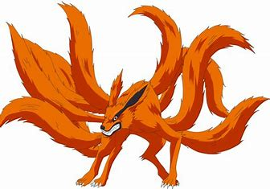

Naruto Uzumaki
Présentation de Naruto
Naruto Uzumaki est le protagoniste du manga et anime Naruto, créé par Masashi Kishimoto. Dès son plus jeune âge, Naruto est un orphelin rejeté par les habitants de Konoha en raison du démon renard à neuf queues, Kyûbi, scellé en lui à sa naissance. Malgré cette solitude, il développe une personnalité bruyante, enjouée et déterminée, cherchant constamment à prouver sa valeur et à être reconnu. Son rêve ultime : devenir Hokage, le chef du village, afin d'obtenir le respect de tous.
Au début, Naruto est perçu comme un ninja maladroit, mais son travail acharné et sa volonté inébranlable lui permettent de progresser rapidement. Il développe des techniques puissantes comme le Rasengan et perfectionne l’art du multiclonage. Grâce à son maître Jiraya, il apprend à contrôler peu à peu son chakra et les pouvoirs du démon renard.
Son parcours est marqué par de nombreuses épreuves, notamment la rivalité avec Sasuke Uchiwa, son ami et adversaire, ainsi que la quête de reconnaissance de son propre héritage en tant que fils du Quatrième Hokage. Malgré les combats et les sacrifices, il conserve une foi inébranlable en ses amis et en sa capacité à changer le destin.
Naruto est un personnage emblématique, non seulement pour sa force au combat, mais aussi pour son grand cœur et sa capacité à rallier ses alliés, transformant même ses ennemis en amis. Son évolution, de jeune ninja turbulent à Hokage respecté, fait de lui l’un des héros les plus inspirants du monde du manga.